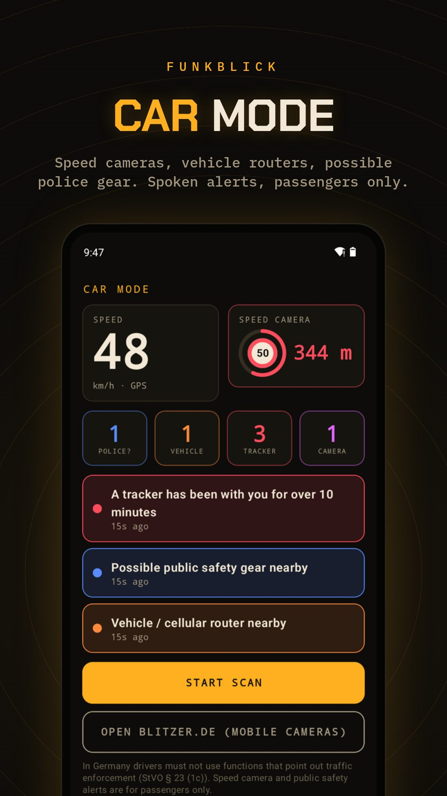

WI-FI · BLUETOOTH · ANDROID
What can a phone tell about police gear?
Funkblick's car mode looks for cellular routers built for vehicles and for body cam makers in the Wi-Fi and Bluetooth around you, announces them by voice and counts them on a big screen. A match only tells you who built the hardware.
Download the APKSource on GitHub
Free, Android 8.0 or newer, runs on GrapheneOS without Google services. No account. The app fetches its own updates from GitHub.

What Funkblick can't do
- No direction. A phone only measures how strong a signal is. The angle on the radar is a fixed spot per device, not a compass.
- Access points only. Android lists Wi-Fi routers and hotspots, not devices that are merely connected. A camera on someone's home network stays invisible.
- No police radio. Police and EMS talk over TETRA or P25, which no phone can receive. Funkblick only sees the Wi-Fi and Bluetooth of their gear, if it has any.
- Random addresses. Phones and trackers change their Bluetooth address. Funkblick then reads what the device broadcasts instead of guessing the maker.
Questions
Can an app detect police cars?
Only indirectly. Many patrol cars carry cellular routers (Cradlepoint, Sierra Wireless) and officers wear body cams (Axon, Motorola Solutions) that send Wi-Fi or Bluetooth. Funkblick spots that hardware. The same routers sit in buses, ambulances and delivery vans.
Is it legal?
It depends on where you are. Receiving signals that everyone broadcasts is legal in most places. Germany forbids drivers to use functions that point out traffic enforcement (StVO § 23 (1c)), Switzerland bans speed camera warnings altogether. Funkblick keeps these alerts off until you agree to a warning.
Does it hear police radio?
No. Police radio runs on P25 or TETRA, which phones can't receive.